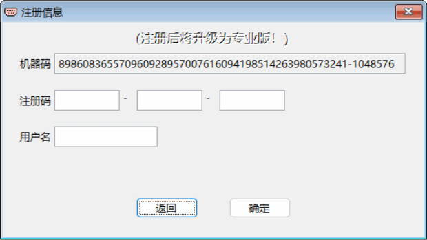

服务支持与注册升级
支持与升级
RS232 Tool 免费版软件可以一直使用，其功能能够满足一般串口调试工作所需。
考虑到软件开发者为开发与持续改进 RS232 Tool 所做的付出及努力，若用户使用后觉得有所帮助，请注册给予支持吧！用户支持是我们继续对软件进行改进完善的动力 。
注册后将升级为 RS232 Tool 专业版，专业版包含 RS232 Tool 全部功能，无任何限制。
在使用中如果有什么建议、问题需要提出或帮助，请发 e-mail 给我们。
如果是注册用户，将会得到我们尽可能地详细解答与帮助支持。
专业版与免费版主要区别：
功能 免费版 专业版
仪表模拟
模拟1条通讯命令
可同时模拟32条通讯命令
扫描仪表通讯协议
波特率固定为9600
支持全范围波特率110-115200
查看PLC口令
口令其中一部分
完整口令
如何注册？
1. 点击帮助菜单下的“注册信息”，即出现如下注册信息窗口；
2. 支付注册费取得注册号；
3. 输入得到的注册号、提供的用户名，点击【确定】 ，若注册信息正确，则注册完成。注册之后的所有升级都是免费的。

注册要求
请将包含如下内容的 e-mail 发到我们的电子邮箱 zyxtool@163.com ，并按所给信息支付注册费后我们即会把相应的注册号发回。
RS232 Tool 的注册费用是人民币 48 元。
注册时需提供的内容：
机器码（必填，注册信息窗口中显示的）
用户名（必填，可以是自己喜欢的艺名，如微信名等）